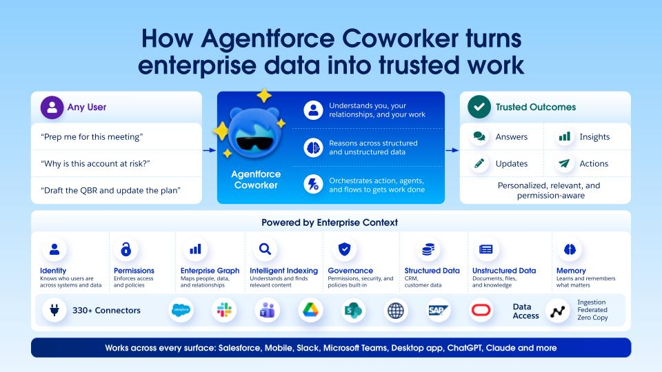

Complementary Roles
Agentforce Coworker is an AI agent that uses Agentforce; Agentforce is the platform to build, deploy, and manage agents at enterprise scale.
Overview
This context model clarifies why Coworker accelerates employee value while Agentforce scales the underlying agent system architecture.
The architecture shows Coworker as the employee-facing AI surface on top of trusted context, orchestration, and governed access layers.

Agentforce Coworker is an AI agent that uses Agentforce; Agentforce is the platform to build, deploy, and manage agents at enterprise scale.
Coworker is embedded in Salesforce CRM Global Search and extends across Salesforce, Slack, Teams, ChatGPT, Claude, mobile, and desktop surfaces.
Coworker provides an autonomous teammate experience that changes how employees access context and execute work inside and outside Salesforce.
Always-on assistant across global search and collaboration surfaces for open-ended, contextual work.
Purpose-built agents for specific workflows such as IT ticketing, sales coaching, and role-specific action paths.
Coworker detects requests that match agent scope and routes to the right employee agent automatically, without extra configuration.